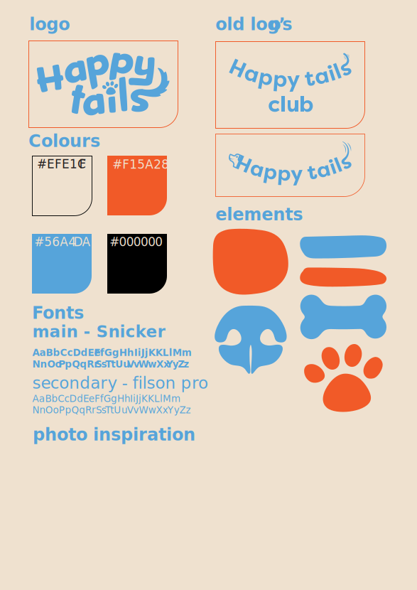

General Information
This branded website is publicly available at buas-media-interactive.github.io/my-website (please change text and hyperlink destination)
This website was created by…
- Amy de Graaf (ID: 230012)
- Luuk van Houts (ID: 231376 )
- Jada Page (ID: 247298)
- Tess Lehner (ID: 247287)
Content
| # | Student ID | Value | Name and link of content |
|---|---|---|---|
| 1. | 230012 | Homepage, Corporate, Lean canvas, Marketing, Persona's, Content | Homepage Corporate |
| 2. | 231376 | Services and About us | Services About us |
| 3. | 247298 | Contact page | Contact |
| 4. | 247287 | Blog | Blog |
Slogan
Paws up for playtime!
The slogan captures the excitement and joy. “Paws up” symbolizes the enthusiasm, while “for playtime” focuses on the core of our service. It aligns with our mission to create a playful, trustworthy community where dogs and dog owners can connect with playdates, care and friendship for their furry companions.
Brand message
Making it easier for dog lovers to find playmates for their pups
The brand message reflects the values by making it easy for dog owners to connect, promoting playfulness and companionship, while still ensuring convenience and peace of mind through safe and reliable connections
Vision
To connect dog owners with trusted like-minded pet lovers, ensuring every dog gets the attention, play, and care they deserve.
Our vision focuses on connecting the dog owners with like-minded pet lovers, ensuring that they will get their attention and play they deserve, while fostering trusted community based on companionship and care beyond basic needs
Mission
Our mission is to create a vibrant and trusted community where dog owners can connect, socialize, and find pawmates, care, and friendship for their furry companions. We make every dog's life happier and healthier by fostering meaningful connections and offering convenient services like playdates and dog sitting. Because every pup deserves a fur-ever friend!
This mission supports the need for a trusted, social space where dog owners can easily connect and care for their pets. By offering services like playdates and dog sitting, it promotes happier, healthier lives for dogs while building a strong, supportive community. Every pup deserves friendship, and so do their humans.
Values
Where Every Tail Finds Joy!
Playing is the basics of the well-being of your dogs. It’s not only about having fun with your dog, it’s about having your dog play with others to socialize them, it’s about their mental stimulation and letting them run around and meet their limits. This value emphasizes the importance of giving your dog opportunities to interact, explore and enjoy their time with other dogs and humans. whether you do it through playdates, games, or adventure. Play is an essential part of a dog's health and happiness.
Paws beyond the basics
Besides the basics of feeding, walking and playing with your dog. We also ensure that your dog feels mentally stimulated, furfilled and satisfied. This value represents our effort to provide services such as dog sitting, playdates and creating a community of dog owners where you can find support and meet new people for you and your four-legged friend.
Pawsitive Connections, Unbreakable Bonds!
This value highlights the importance of building a connection, discovering new adventures and creating bonds that support the companionship between dogs and humans. The bond between your dog and you is the most special bond you create in life, making sure your dog is happy and taking care of is the best thing you can do for you dog, helping your dog find new connections and friend helps dogs to feel socially and physically in shape, and ensures that owners can create a new network.
We've Got Your Tail Covered!
We recognize the struggle that life can be busy, and finding time to care for and socialize your dog isn’t as easy as most people think. This value is the core of our company, providing a hassle-free solution for dog owners to help your dog find even more joy, whether through our easy-to-arrange playdates, the dog-sitting services, or our supportive community.
Trust Us, We Don’t Play Fetch with Safety
Trust and safety are essential when it comes to you and your dog. That’s why we create a secure environment where you can confidently connect with a trusted dog community. Our reliable service ensures that your dog is always in safe hands, giving you peace of mind. By fostering meaningful connections between owners and their dogs, we build a supportive network where safety and trust come first.
Do's

Don'ts

Design Elements
-
Our visual identity is built around a simple yet intentional three-color palette.
- #EFE1CF This is our base color, used as the background in most designs. It brings warmth, calmness, and a natural tone that reflects comfort and friendliness. Beige creates a neutral canvas that allows our accent colors to stand out while maintaining a soft, inviting aesthetic.
- #F15A28 One of the few colors that dogs can perceive, blue was selected for its practicality and emotional resonance. It symbolizes trust, reliability, and calmness, values that are at the heart of our brand. Blue also helps us connect with both pets and their owners on a deeper level.
- #56A4DA s the complementary color to blue, orange brings energy, enthusiasm, and warmth to our palette. It adds a playful, vibrant touch that contrasts beautifully with blue, creating a visually harmonious and balanced feel.
-
Our visual identity is built around a simple yet intentional three-color palette.
- #EFE1CF This is our base color, used as the background in most designs. It brings warmth, calmness, and a natural tone that reflects comfort and friendliness. Beige creates a neutral canvas that allows our accent colors to stand out while maintaining a soft, inviting aesthetic.
- #F15A28 One of the few colors that dogs can perceive, blue was selected for its practicality and emotional resonance. It symbolizes trust, reliability, and calmness, values that are at the heart of our brand. Blue also helps us connect with both pets and their owners on a deeper level.
- #56A4DA s the complementary color to blue, orange brings energy, enthusiasm, and warmth to our palette. It adds a playful, vibrant touch that contrasts beautifully with blue, creating a visually harmonious and balanced feel.
-
A colour scheme (with HTML colour codes, which must be consistent with your final website)
— see the example below from the BUas brand book:
- #EE7622 The orange colour refers to the Dutch identity and the city of Breda (Oranjestad). Orange stands for…
- #00406B Dark blue signifies…
- Font choices
- User interface patterns (e.g. grids, carousels, menu organizations etc.)
- The structure of the navigation and content (e.g. how content units are distributed across pages)
- All these elements must be justified by referring to the theory and/or vocabulary of design
- Please relate these elements to other units, for example:
- How does website design fit the values and personality of the brand?
- How does website design fit the marketing and communication strategy?
- How does website design help showcase the unique value proposal of the product?
- HTML templates if these are different from this one (buas-media-interactive/prj4-group-template)
- The source code for UX patterns other than the ones provided by the “Bootstrap” library (see getbootstrap.com/docs for a list of such patterns)
- Images that were not produced by students themselves, including when crediting is not mandatory (in other words, we ask you to credit Unsplash images)
- Your testing goals – in other words, what you are trying to learn about your website?
- Your testing methods, which includes information about:
- The test’s participants (number, match with target audience, etc.)
- The test’s setting (which material is used, is it done remotely, on campus, at home, etc.)
- The test’s protocol (what instructions are given, how it is recorded, etc.)
- Your testing results, which includes information about:
- Positive and negative aspects of the UI/UX that have been identified, ranked by importance.
- Improvements that have been implemented on the final website (or that would be implemented if doing so would be too complex)
-

-
-
- Many dog owners struggle to connect with other dog owners in their neighborhood. Being a full-time dog owner comes with challenges, especially when balancing work and pet care. As a result, some owners interact less with their neighbors, making it harder for their dogs to socialize. This can be particularly difficult for single-dog households, where the dog lacks stimulation at home.
- Finding playmates for their dog is another issue. Many owners don’t know others who are open to dog interactions, making it difficult to arrange playdates. This challenge is even greater for owners of larger dogs, as some people perceive them as intimidating or are simply hesitant due to their size.
- Time constraints also play a major role. Since our target audience consists of individuals between 30 and 50 years old, many of them work full-time. Even when they do find time to walk their dogs, it's often not enough to fully release their dog’s energy. A quick walk may not provide the exercise and stimulation their pet needs.
- Beyond just their dogs, many owners themselves are looking to meet new people who share their interests. With busy work schedules, it’s challenging to maintain a social circle outside of the workplace. Having a way to connect with fellow dog owners provides an opportunity to form new friendships while giving their dogs the chance to play and socialize.
- We created Happy Tails to help dog owners connect with others in their neighborhood for walks and playdates. With our platform, you can find like-minded dog owners nearby, allowing your dog to run free while you relax, chat, and build new connections. Our goal is to provide a safe and trusted space where both dogs and their owners can enjoy social interactions without the hassle of searching for companions on their own.
- By offering extra services and keeping everything effortless, Happy Tails makes it easy to meet new people and arrange walks without added stress. Since the community consists of dog owners in your surroundings, you no longer have to struggle to find local playmates. With just a few clicks, you can discover new connections and start messaging others, making socializing with fellow dog lovers easier than ever.
- Our target audience consists of dog owners aged 30 to 50 who want to socialize their pets while connecting with like-minded individuals. Many owners seek playmates for their dogs and opportunities to expand their own social circles through shared pet experiences. Additionally, a significant number are interested in flexible and reliable dog-sitting services to balance their busy schedules.
- Our primary audience includes young professionals, families, remote workers, and single individuals who integrate their dogs into daily life. They prioritize their pet’s well-being, enjoy outdoor activities, and often need trusted pet care solutions, especially when traveling. Many live in urban or suburban areas with limited open spaces, making scheduled playdates a valuable alternative. Expats and newcomers also benefit from a community-driven platform to build a trusted pet-care network.
- Dog owners in this group are comfortable using digital platforms to arrange meetups and value cost-effective, reliable alternatives to expensive pet care services. By addressing their needs, such as finding playmates, reducing guilt about leaving their dogs alone, and creating a supportive community, we are building more than just a service. Happy Tails is a trusted space where dogs can play, owners can connect, and reliable pet care is always within reach.
- We’re more than just a pet care service; we’re a hub for dog lovers to connect and share special moments. By bringing together dogs and their owners, we offer a simple way to arrange playdates and form real, lasting friendships with people who share your passion for pets. Join us to create a community where your dog can socialize and you can find trusted companions who understand the joy of dog ownership.
- Our platform is designed to help dog owners create a thriving community of like-minded pet lovers. We provide a seamless way to connect with others in your area, making it easy to arrange playdates and share valuable pet care tips. Whether you're looking for a playmate for your dog or simply want to meet fellow dog enthusiasts, we offer a space where both pets and people can connect, making pet ownership more social and enjoyable.
- Our sustainable competitive advantage lies in our unique approach to connecting dog owners. Unlike traditional dog-sitting services or subscription-based platforms, Happy Tails is a free, community-driven space designed for those who want to meet fellow dog owners but need a little help doing so.
- What sets us apart is our focus on fostering playmates rather than just offering pet care solutions. We don’t just provide a service; we create opportunities for meaningful connections between dogs and their owners. By prioritizing socialization and community-building, Happy Tails fills a gap in the market, offering a more organic and engaging way for dog owners to find trusted companions for their pets while expanding their own social circles.
- We use Instagram to engage with our target audience by sharing posts and videos that help them connect with our brand. Through this, we foster relationships and build trust, ensuring that our community feels confident in using our platform.
- Facebook allows us to reach the slightly older segment of our audience, ensuring we cover the full spectrum of dog owners who could benefit from Happy Tails.
- Additionally, we use physical flyers to create a tangible connection with potential users. By distributing them at local vets, pet stores, and dog trainers, we provide an easy way for dog owners to learn about our platform, scan a QR code, and immediately see what we offer.
- Website Traffic and Account Sign-Ups – We measure how many people click through to our website and how many create accounts to join Happy Tails.
- Social Media Engagement – By analyzing likes, comments, shares, and interactions on Instagram and Facebook, we assess how engaged our audience is with our content..
- Flyer Effectiveness – We track how many people visit our website via QR codes and links on our flyers to determine their impact.
- List your sources of revenue: describe the revenue model and the (different) revenue stream(s).
- List your main costs: define the fixed and variable costs.
- Calculate the cost per unit.
- State what your product and/or service is and how this contributes to your unique value proposition.
- Clarify the fit between the product/service developed and the brand identity/brand image.
Together, these colors not only create a strong and consistent visual identity but also support the emotional tone we want to convey, joy, trust, and a sense of belonging for every member of our dog-loving community.
Font choices
The main font is called “snicker”. This font is playful and looks like it’s written with the hand. This gives an authentic and friendly look.
The secondary font is Filson pro. This is a more simple font that is easily readable for larger pieces of text while still fitting within our style. It is a dynamic and modern font.
Logo
The logo is made with a playful and fun font, and the letters are placed in a lively way to give it a cheerful and friendly look. Inside the logo, there are small details that show a paw and a tail. The tail starts from the end of the letter “s” and curls around playfully. The top of the letter“I” is shaped like a paw, which shows that dogs are a big part of what we do.
These little touches make the logo feel warm, fun, and welcoming. It fits really well with our goal of bringing dogs and their owners together to play, connect, and enjoy time with others.
Icons
The icons we use are all connected to things that belong to dogs. For example, we use shapes like a paw, a nose, and bones. These dog-related elements help make the visual style more playful and clearly focused on dogs. They make it easy for people to see right away that our brand is all about dogs and their happiness.
In our design, we also choose soft, round shapes instead of straight lines. Round shapes feel more friendly, gentle, and fun. They help create a warm and welcoming feeling, which fits perfectly with our brand’s goal, to build a kind, joyful place for dogs and their owners. Everything in our visual style, from the icons to the shapes, is made to support that friendly and playful feeling.
Please provide a list of design elements alongside their justifications:
Credits
Please provide links and/or credits for third-party elements including:
Testing Report
Please write about…
Marketing
Context of campaign and promotional activities
Explain the context of the campaign is (What the campaign is about, what the message is, which promotional activities were executed). In addition, present the objectives as mentioned in the Communication en Media Plan.
Explain and justify the chosen channels/platforms used and show there is a solid connection to the objectives established in the Communication en Media Plan.
Learning Points
Identify and justify your learning point (based on the Communication en Media Plan). What did you learn during the duration of the project concerning the campaign? What worked and what didn’t? What went as expected and what didn’t? What would you do differently? Reflect on the past work and describe what you learned.
Future Planning
Reflection on what has been done and describe in detail what you would do if the project would continue.
Describe in detail your future recommendations if the campaign would be continued.
Detail and describe clearly the process of what your would do differently based on you experience on this project related to the marketing assignment.
Professionalism
Present and organize below all social media/online activities of the campaign. Context and material are according to the brand style, image, and vision. Images on the site are of high-quality, readable, and properly designed.
Management
Lean Canvas
Fill in at least 2 bullet points per building block and according to the rubrics.
Problem
Solution
Customer segments
Unique value proposition
Unfair advantage
Channels
Key metrics
Revenue streams
Cost structure
Services/products
Validation of Assumptions
Write a reflection on the choices made in creating choosing the trademark, including an analysis of the existing alternatives.
Appendix
Please use the list below to provide links to evidence for all parts of your justication. Please double-check all links before delivering the website. Do not hesitate to refer to these numbers above.
Together, these colors not only create a strong and consistent visual identity but also support the emotional tone we want to convey, joy, trust, and a sense of belonging for every member of our dog-loving community.
Font choices
The main font is called “snicker”. This font is playful and looks like it’s written with the hand. This gives an authentic and friendly look.
The secondary font is Filson pro. This is a more simple font that is easily readable for larger pieces of text while still fitting within our style. It is a dynamic and modern font.
Logo
The logo is made with a playful and fun font, and the letters are placed in a lively way to give it a cheerful and friendly look. Inside the logo, there are small details that show a paw and a tail. The tail starts from the end of the letter “s” and curls around playfully. The top of the letter“I” is shaped like a paw, which shows that dogs are a big part of what we do.
These little touches make the logo feel warm, fun, and welcoming. It fits really well with our goal of bringing dogs and their owners together to play, connect, and enjoy time with others.
Icons
The icons we use are all connected to things that belong to dogs. For example, we use shapes like a paw, a nose, and bones. These dog-related elements help make the visual style more playful and clearly focused on dogs. They make it easy for people to see right away that our brand is all about dogs and their happiness.
In our design, we also choose soft, round shapes instead of straight lines. Round shapes feel more friendly, gentle, and fun. They help create a warm and welcoming feeling, which fits perfectly with our brand’s goal, to build a kind, joyful place for dogs and their owners. Everything in our visual style, from the icons to the shapes, is made to support that friendly and playful feeling.
Production
Design Elements